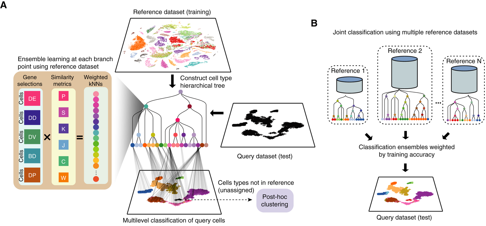

7 Supervised cell annotation with a reference
The other approach to identifying cell types involves using an annotated reference dataset to assign labels for a query dataset. In this section, we will demonstrate how our package scClassify can be used for supervised cell type annotation.
# set parameters
set.seed(51773)
use_mc <- TRUE
if (use_mc) {
nCores <- max(parallel::detectCores()/2, 1)
} else {
nCores <- 1
}
BPPARAM <- simpleSeg:::generateBPParam(nCores)
theme_set(theme_classic())8 scClassify: Cell annotation
scClassify is a supervised multiscale classification framework for single-cell data based on ensemble learning and cell type hierarchies. scClassify first constructs a cell type tree using the reference dataset, and then builds an ensemble weighted kNN classifier at each node. Users can select any combination of six correlation/similarity metrics and five marker selection methods to build the kNN model. This results in up to 30 base classifiers that can be constructed for each node of the cell type tree.

To demonstrate the use of scClassify, we will use the Stickels 2021 dataset, which examines mouse brain tissue from the hippocampus and surrounding regions. It is available through the STexampleData package.
stickelsSPE = STexampleData::SlideSeqV2_mouseHPC()
stickelsSPEclass: SpatialExperiment
dim: 23264 53208
metadata(0):
assays(1): counts
rownames(23264): 0610005C13Rik 0610007P14Rik ... n-R5s40 n-R5s95
rowData names(1): gene_name
colnames(53208): AACGTCATAATCGT TACTTTAGCGCAGT ... GACTTTTCTTAAAG
GTCAATAAAGGGCG
colData names(3): barcode_id sample_id celltype
reducedDimNames(0):
mainExpName: NULL
altExpNames(0):
spatialCoords names(2) : xcoord ycoord
imgData names(0):The dataset contains 17 unique cell types.
stickelsSPE$celltype |> unique() [1] NA "CA3" "CA1"
[4] "Choroid" "Oligodendrocyte" "Denate"
[7] "Entorihinal" "Ependymal" "Interneuron"
[10] "Astrocyte" "Neuron.Slc17a6" "Neurogenesis"
[13] "Mural" "Endothelial_Stalk" "Polydendrocyte"
[16] "Endothelial_Tip" "Microglia_Macrophages" "Cajal_Retzius" As scClassify requires log-normalised expression data, we will use normalizeCounts from the scuttle package to transform and normalise our expression data.
# log normalisation
norm_assay = normalizeCounts(stickelsSPE, transform = "log",
BPPARAM = BPPARAM)
# store normalised expression data in the "norm" slot
assay(stickelsSPE, "norm", withDimnames = FALSE) = norm_assayWe will first split the dataset into an 80% training or reference dataset and a 20% testing or query dataset.
set.seed(51773)
# split into 80% reference and 20% query
ref_idx = sample(seq_len(ncol(stickelsSPE)), size = 0.7 * ncol(stickelsSPE))
ref_spe = stickelsSPE[, ref_idx]
query_spe = stickelsSPE[, -ref_idx]
# access expression data as matrix
ref_mat = assay(ref_spe, "norm") |> as.matrix()Warning in asMethod(object): sparse->dense coercion: allocating vector of size
6.5 GiBquery_mat = assay(query_spe, "norm") |> as.matrix()Warning in asMethod(object): sparse->dense coercion: allocating vector of size
2.8 GiB8.1 Using scClassify
scClassify is the main classification function within scClassify. It requires a reference expression matrix (exprsMat_train) and the corresponding vector of cell type labels as input (cellTypes_train). We then specify our query matrix (exprsMat_test) and the corresponding cell type labels (cellTypes_test) in the form of lists. Below, we have also specified the following customisations for building the model -
-
tree = HOPACH: use the HOPACH algorithm to build a cell type hierarchy. -
algorithm = WKNN: use the weighted KNN model -
selectFeatures = c("limma"): identify differentially expressed (DE) genes usinglimma, which will be used as features to build the weighted KNN model. Other options to select features include differentially variable (DV) genes, differentially distributed (DD), bimodally distributed (BI) and differentially expressed proportions. -
c("pearson", "spearman", "cosine"): use Pearson and Spearman correlation to measure similarity between cells. Other options include Kendall’s correlation, cosine distance, Jaccard distance, Manhattan distance, and weighted rank correlation.
scClassify_res = scClassify(exprsMat_train = ref_mat,
cellTypes_train = ref_spe$celltype,
exprsMat_test = list(stickels = query_mat),
cellTypes_test = list(stickels = query_spe$celltype),
tree = "HOPACH",
algorithm = "WKNN",
selectFeatures = c("limma"),
similarity = c("pearson", "spearman"),
returnList = FALSE,
parallel = TRUE,
BPPARAM = BPPARAM,
verbose = FALSE)Time for this code chunk to run with 5.5 cores: 0 seconds
The output is a list containing all model building and testing information. The testRes slot contains the results of testing the model on the query dataset, and the trainRes slot contains the model built from the reference dataset.
scClassify_res$trainResThe predictions for each cell can be accessed through the ensembleRes slot in the testing results.
pred_mat = scClassify_res$testRes$human$ensembleRes |> as.data.frame()
head(pred_mat)8.2 Evaluating performance
# convert predictions to factor
pred_mat$cellTypes = as.factor(pred_mat$cellTypes)
# ensure both ground truth and predictions have the same levels
combined_levels = union(levels(pred_mat$cellTypes), levels(query_spe$celltype))
levels(query_spe$celltype) = combined_levels
levels(pred_mat$cellTypes) = combined_levels
conf_matrix = confusionMatrix(data = pred_mat$cellTypes,
reference = query_spe$celltypes)
conf_matrix$overallrecall = MLmetrics::Recall(y_pred = pred_mat$cellTypes,
y_true = query_spe$celltype)
precision = MLmetrics::Precision(y_pred = pred_mat$cellTypes,
y_true = query_spe$celltype)
f1_score = MLmetrics::F1_Score(y_pred = pred_mat$cellTypes,
y_true = query_spe$celltype)
cat("Recall:", recall, "\n")
cat("Precision:", precision, "\n")
cat("F1-Score:", f1_score, "\n")results = data.frame(trueLabel = query_spe$celltype,
predictedLabel = pred_mat$cellTypes)
results = dplyr::mutate(results, classification = dplyr::case_when(
predictedLabel != trueLabel ~ "incorrectly classified",
predictedLabel == trueLabel ~ "correctly classified",
predictedLabel == "unassigned" ~ "incorrectly unassigned"
))
ggplot(results, aes(x = trueLabel, fill = classification)) +
geom_bar(position = "fill")8.3 sessionInfo
R version 4.4.1 (2024-06-14)
Platform: aarch64-apple-darwin20
Running under: macOS Sonoma 14.4.1
Matrix products: default
BLAS: /Library/Frameworks/R.framework/Versions/4.4-arm64/Resources/lib/libRblas.0.dylib
LAPACK: /Library/Frameworks/R.framework/Versions/4.4-arm64/Resources/lib/libRlapack.dylib; LAPACK version 3.12.0
locale:
[1] en_US.UTF-8/en_US.UTF-8/en_US.UTF-8/C/en_US.UTF-8/en_US.UTF-8
time zone: Australia/Sydney
tzcode source: internal
attached base packages:
[1] stats4 stats graphics grDevices utils datasets methods
[8] base
other attached packages:
[1] caret_6.0-94 lattice_0.22-6
[3] scater_1.34.0 ggplot2_3.5.1
[5] scuttle_1.16.0 MLmetrics_1.1.3
[7] STexampleData_1.14.0 SpatialExperiment_1.16.0
[9] SingleCellExperiment_1.28.1 SummarizedExperiment_1.36.0
[11] Biobase_2.66.0 GenomicRanges_1.58.0
[13] GenomeInfoDb_1.42.0 IRanges_2.40.0
[15] S4Vectors_0.44.0 MatrixGenerics_1.18.0
[17] matrixStats_1.4.1 ExperimentHub_2.14.0
[19] AnnotationHub_3.14.0 BiocFileCache_2.14.0
[21] dbplyr_2.5.0 BiocGenerics_0.52.0
[23] scClassify_1.18.0
loaded via a namespace (and not attached):
[1] segmented_2.1-3 bitops_1.0-9
[3] EBImage_4.48.0 lubridate_1.9.3
[5] httr_1.4.7 hopach_2.66.0
[7] RColorBrewer_1.1-3 tools_4.4.1
[9] utf8_1.2.4 R6_2.5.1
[11] HDF5Array_1.34.0 lazyeval_0.2.2
[13] mgcv_1.9-1 rhdf5filters_1.18.0
[15] withr_3.0.2 sp_2.1-4
[17] gridExtra_2.3 cli_3.6.3
[19] nnls_1.6 spatstat.data_3.1-4
[21] proxy_0.4-27 systemfonts_1.1.0
[23] svglite_2.1.3 parallelly_1.39.0
[25] limma_3.62.1 rstudioapi_0.17.1
[27] RSQLite_2.3.8 simpleSeg_1.8.0
[29] generics_0.1.3 dplyr_1.1.4
[31] Matrix_1.7-1 ggbeeswarm_0.7.2
[33] fansi_1.0.6 abind_1.4-8
[35] terra_1.7-78 lifecycle_1.0.4
[37] yaml_2.3.10 rhdf5_2.50.0
[39] recipes_1.1.0 SparseArray_1.6.0
[41] grid_4.4.1 blob_1.2.4
[43] promises_1.3.2 crayon_1.5.3
[45] shinydashboard_0.7.2 beachmat_2.22.0
[47] KEGGREST_1.46.0 magick_2.8.5
[49] cytomapper_1.18.0 pillar_1.9.0
[51] knitr_1.49 rjson_0.2.23
[53] future.apply_1.11.3 codetools_0.2-20
[55] glue_1.8.0 spatstat.univar_3.1-1
[57] data.table_1.16.2 vctrs_0.6.5
[59] png_0.1-8 gtable_0.3.6
[61] kernlab_0.9-33 cachem_1.1.0
[63] gower_1.0.1 xfun_0.49
[65] S4Arrays_1.6.0 mime_0.12
[67] prodlim_2024.06.25 tidygraph_1.3.1
[69] survival_3.7-0 timeDate_4041.110
[71] iterators_1.0.14 hardhat_1.4.0
[73] lava_1.8.0 statmod_1.5.0
[75] ipred_0.9-15 nlme_3.1-166
[77] bit64_4.5.2 filelock_1.0.3
[79] irlba_2.3.5.1 svgPanZoom_0.3.4
[81] vipor_0.4.7 rpart_4.1.23
[83] colorspace_2.1-1 DBI_1.2.3
[85] raster_3.6-30 nnet_7.3-19
[87] tidyselect_1.2.1 proxyC_0.4.1
[89] bit_4.5.0 compiler_4.4.1
[91] curl_6.0.1 BiocNeighbors_2.0.0
[93] DelayedArray_0.32.0 plotly_4.10.4
[95] scales_1.3.0 rappdirs_0.3.3
[97] tiff_0.1-12 stringr_1.5.1
[99] digest_0.6.37 fftwtools_0.9-11
[101] spatstat.utils_3.1-1 mixtools_2.0.0
[103] rmarkdown_2.29 XVector_0.46.0
[105] htmltools_0.5.8.1 pkgconfig_2.0.3
[107] jpeg_0.1-10 Cepo_1.12.0
[109] sparseMatrixStats_1.18.0 fastmap_1.2.0
[111] rlang_1.1.4 htmlwidgets_1.6.4
[113] UCSC.utils_1.2.0 shiny_1.9.1
[115] DelayedMatrixStats_1.28.0 farver_2.1.2
[117] jsonlite_1.8.9 BiocParallel_1.40.0
[119] ModelMetrics_1.2.2.2 BiocSingular_1.22.0
[121] RCurl_1.98-1.16 magrittr_2.0.3
[123] GenomeInfoDbData_1.2.13 patchwork_1.3.0
[125] Rhdf5lib_1.28.0 munsell_0.5.1
[127] Rcpp_1.0.13-1 viridis_0.6.5
[129] stringi_1.8.4 pROC_1.18.5
[131] ggraph_2.2.1 zlibbioc_1.52.0
[133] MASS_7.3-61 plyr_1.8.9
[135] parallel_4.4.1 listenv_0.9.1
[137] ggrepel_0.9.6 deldir_2.0-4
[139] Biostrings_2.74.0 graphlayouts_1.2.1
[141] splines_4.4.1 locfit_1.5-9.10
[143] igraph_2.1.1 spatstat.geom_3.3-4
[145] reshape2_1.4.4 ScaledMatrix_1.14.0
[147] BiocVersion_3.20.0 evaluate_1.0.1
[149] BiocManager_1.30.25 foreach_1.5.2
[151] tweenr_2.0.3 httpuv_1.6.15
[153] tidyr_1.3.1 purrr_1.0.2
[155] polyclip_1.10-7 future_1.34.0
[157] ggforce_0.4.2 rsvd_1.0.5
[159] xtable_1.8-4 later_1.4.1
[161] viridisLite_0.4.2 class_7.3-22
[163] minpack.lm_1.2-4 tibble_3.2.1
[165] memoise_2.0.1 beeswarm_0.4.0
[167] AnnotationDbi_1.68.0 cluster_2.1.6
[169] timechange_0.3.0 globals_0.16.3